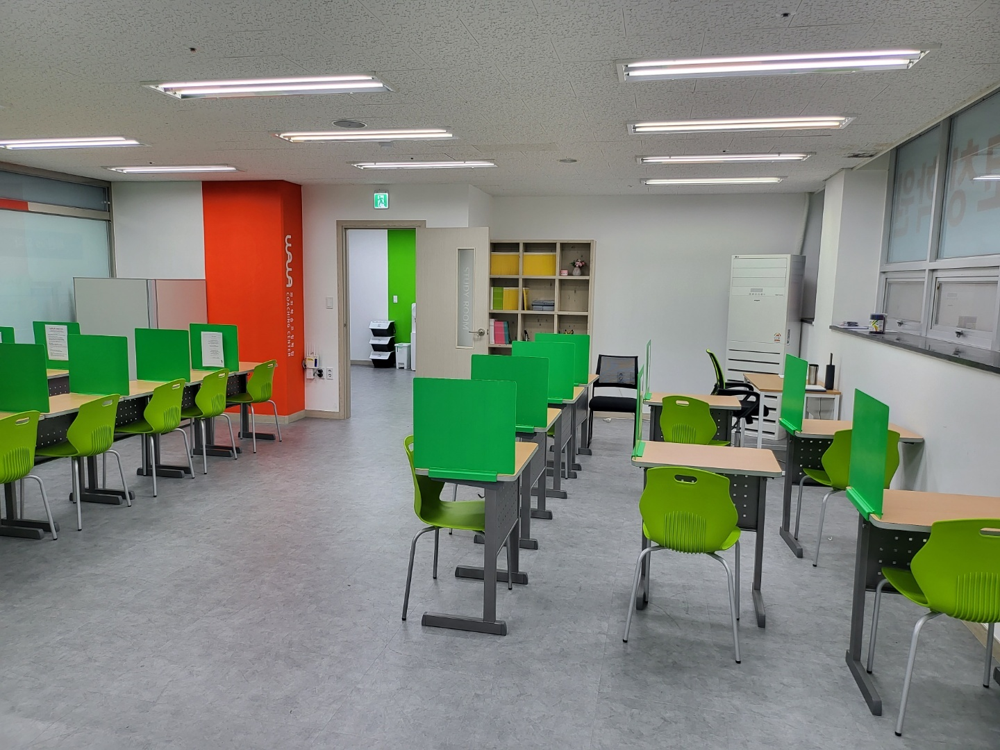
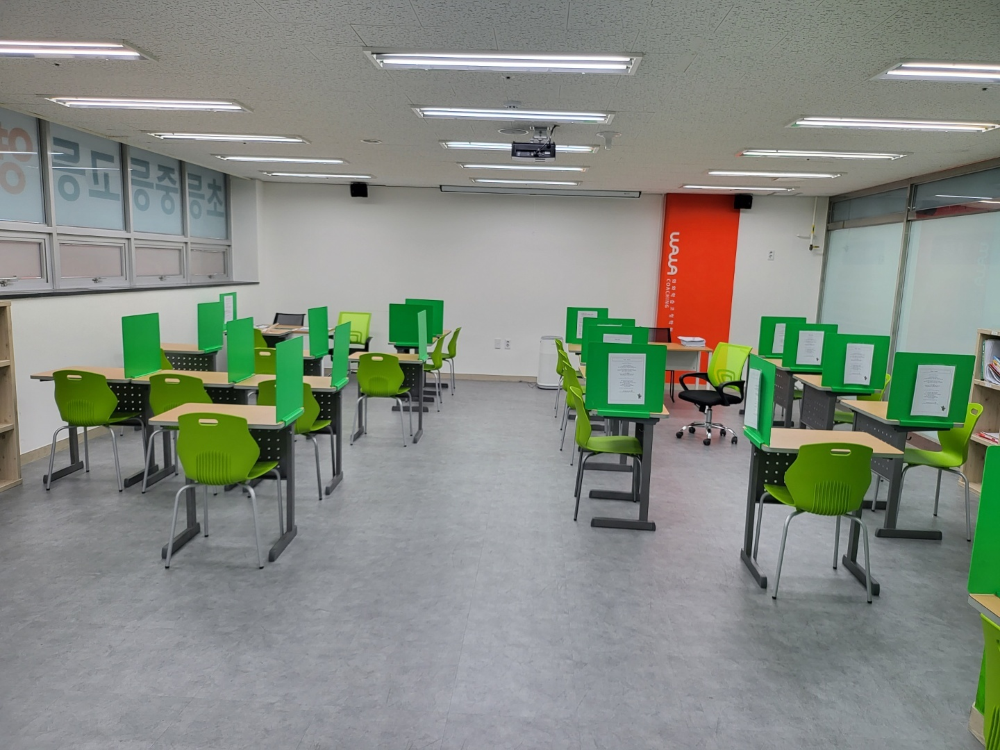

대구광역시 달서구 성당동 당산로에 있는 원화중학교(원화중)는 1953년에 문을 연 사립 중학교입니다. 원래 여자중학교로 출발했다가 2000년대 초에 남녀공학으로 바뀌었습니다. 장동초등학교·장기초등학교·성당초등학교 쪽 아이들이 이 학교에서 만납니다.
이 학교 학부모님들께 2학기에 가장 많이 듣는 말은 성적 이야기가 아니라 시간 이야기입니다. “애가 놀지를 않아요. 그런데 점수가 그대로예요.” 학원도 다니고 숙제도 하고 주말에도 책상 앞에 앉아 있는데, 성적표만 작년과 똑같습니다.
이럴 때 부모님이 가장 먼저 떠올리시는 선택지는 보통 둘입니다. 학원을 바꾸거나, 시간을 더 늘리거나. 그런데 상담에서 아이 공부를 들여다보면 모자란 것이 시간이 아닌 경우가 훨씬 많습니다. 모자란 것은 틀린 문제를 다시 만나는 주기입니다.
2학기 기말고사는 보통 12월 초에서 중순에 치러집니다. 10월 초인 지금 두 달 남짓 남았습니다. 오늘은 그 두 달을 같은 시간으로 다른 결과를 내는 방식으로 쓰는 법을 정리해 보겠습니다.
공부한 시간과 성적이 따로 노는 이유
공부는 두 가지 일이 섞여 있습니다. 하나는 새로 넣는 일이고, 다른 하나는 넣은 것이 빠져나갔는지 확인하는 일입니다. 점수는 두 번째에서 나옵니다. 그런데 아이들이 책상에서 하는 일의 대부분은 첫 번째입니다.
이유는 단순합니다. 새 진도를 나가는 일은 눈에 보입니다. 문제집 페이지가 넘어가고, 강의 회차가 올라가고, 오늘 몇 쪽을 했는지 말할 수 있습니다. 반면 지난주에 틀린 문제를 다시 푸는 일은 진도가 0쪽입니다. 아이도 부모님도 “오늘 아무것도 안 한 것 같은” 기분이 듭니다. 그래서 가장 점수에 가까운 일이 매일 맨 뒤로 밀립니다.
여기에 하나가 더 겹칩니다. 아이는 이미 아는 것을 다시 하는 쪽을 좋아합니다. 풀리니까 기분이 좋고 속도도 납니다. 틀렸던 문제는 다시 봐도 또 막히니 불편합니다. 그래서 세 시간을 앉아 있어도, 그 세 시간 안에 아이가 못 하는 것과 마주한 시간은 10분도 안 되는 경우가 생깁니다. 공부 시간과 성적이 따로 노는 자리가 여기입니다.
부모님께서 확인하실 방법은 간단합니다. 오늘 공부한 분량을 묻지 마시고, “오늘 틀린 문제 몇 개야?”라고 물어보세요. 대답이 바로 안 나오거나 “거의 다 맞았어”라는 말이 며칠 연속으로 돌아오면, 아이는 아는 것만 반복하고 있을 가능성이 큽니다.
오답 노트를 만들어도 점수가 안 오르는 까닭
오답 정리를 시켜 보신 집도 많습니다. 그런데 대부분 두세 주 하다가 멈춥니다. 멈추는 이유는 아이가 게을러서가 아니라, 오답 노트를 ‘만드는 일’로 이해했기 때문입니다.
흔한 모습이 이렇습니다. 문제를 오려 붙이거나 베껴 쓰고, 그 아래에 답지의 풀이를 그대로 옮겨 적습니다. 색깔 펜으로 정리하면 공책은 예뻐집니다. 시간은 한 문제에 10분씩 듭니다. 그렇게 만든 공책을 시험 전까지 한 번도 다시 펴지 않습니다. 이건 공부가 아니라 필기입니다.
오답 정리의 핵심은 기록이 아니라 재시도입니다. 다시 풀어서 맞힐 수 있는지가 전부입니다. 그래서 저희가 아이들에게 시키는 형태는 훨씬 가볍습니다.
- 문제를 옮겨 적지 않습니다. 교재 쪽수와 문제 번호만 적습니다. 문제는 책에 이미 있습니다.
- 답지 풀이를 베끼지 않습니다. 대신 한 줄을 씁니다. “내가 왜 틀렸는가.” 계산 실수인지, 문제를 잘못 읽었는지, 개념을 모르는지 셋 중 하나로 씁니다.
- 날짜를 적습니다. 다시 풀 날을 정하기 위해서입니다. 이게 없으면 오답 노트는 쌓이기만 합니다.
- 다시 풀어서 맞으면 지웁니다. 목록이 줄어드는 것이 아이에게 보이는 성과가 됩니다.
“왜 틀렸는가”를 셋으로 나누는 것이 특히 중요합니다. 계산 실수가 반복되는 아이에게 개념 강의를 더 듣게 하는 것은 소용이 없고, 문제를 잘못 읽는 아이에게 문제 수를 늘리면 틀리는 수만 늘어납니다. 원인을 모르고 양을 늘리는 것이 2학기에 가장 많이 낭비되는 시간입니다.
두 달을 쓰는 복습 주기 — 다음 날, 일주일 뒤, 시험 2주 전
기말까지 두 달 남은 지금, 복습을 매일 전 범위로 돌릴 수는 없습니다. 그래서 간격을 정해 둡니다. 저희가 중학생에게 쓰는 기본 틀은 세 번입니다.
- 1차 — 다음 날. 어제 틀린 문제만 다시 풉니다. 5분에서 10분이면 끝납니다. 어제 들은 설명이 남아 있을 때 다시 만나야 “아 맞다”가 “할 수 있다”로 바뀝니다.
- 2차 — 일주일 뒤. 주말에 그 주에 틀린 문제를 모아 다시 풉니다. 여기서 또 틀리는 문제가 진짜 구멍입니다. 이 문제들만 따로 표시해 둡니다.
- 3차 — 시험 2주 전. 2차에서 또 틀렸던 문제만 다시 풉니다. 이때쯤이면 목록이 많이 줄어 있어서, 전 범위를 다시 보는 것보다 훨씬 적은 시간으로 끝납니다.
이 틀이 주는 이점은 시험 2주 전의 풍경이 달라진다는 것입니다. 복습 주기가 없는 아이는 시험 2주 전에 처음부터 다시 시작합니다. 범위가 통째로 남아 있으니 마음이 급해지고, 급하면 또 아는 것부터 보게 됩니다. 반면 1차·2차를 돌려 둔 아이는 2주 전에 남은 목록만 보면 됩니다. 같은 2주인데 하는 일이 다릅니다.
과목별로는 성격이 조금 다릅니다. 수학은 다시 푸는 것이 복습입니다. 눈으로 풀이를 읽는 것은 복습이 아닙니다. 영어는 다시 쓰는 것이 복습입니다. 뜻을 보고 단어를 쓰고, 우리말을 보고 본문 문장을 써 보는 쪽입니다. 사회·과학은 책을 덮고 말해 보는 것이 복습입니다. 단원 이름만 보고 무슨 내용이었는지 말이 나오면 넘어가고, 막히면 그 단원이 오늘 할 일입니다.
학년별로 지금 손댈 곳이 다릅니다
원화중학교는 1학년부터 3학년까지 한 건물에 있지만, 10월에 해야 할 일은 학년마다 다릅니다.
- 중학교 1학년 — 분량보다 기록이 먼저입니다. 틀린 문제에 표시를 남기고 다음 날 다시 푸는 동작 자체가 아직 몸에 없습니다. 하루 다섯 문제라도 좋으니 1차 복습을 매일 같은 시간에 붙여 두는 것이 이번 분기의 목표입니다.
- 중학교 2학년 — 구멍이 가장 잘 생기는 학년입니다. 수학은 단원이 서로 기대어 있어서 앞 단원이 흔들리면 뒤에서 다시 막힙니다. 아이가 지금 어려워하는 단원이 아니라 두 단원 앞이 비어 있는 경우가 흔하므로, 2차 복습에서 또 틀린 문제의 단원을 모아 보면 어디가 비었는지 금방 보입니다.
- 중학교 3학년 — 중학교에서 치르는 마지막 내신입니다. 점수 자체보다, 고등학교에 올라가서 다시 쓸 단원을 끝내 두는 쪽이 남습니다. 수학은 인수분해·이차방정식·이차함수, 영어는 문장을 직접 써 보는 연습입니다. 고등학교 1학년 첫 내신은 입학하고 두 달 만에 돌아옵니다.
기출 분석은 남의 시험지를 구해 오는 일이 아닙니다
“원화중학교 기출 좀 구해 주세요”라는 말씀을 종종 듣습니다. 그런데 기출 분석에서 가장 값이 나가는 자료는 이미 아이 가방에 있습니다. 지난 중간고사 시험지입니다.
읽는 방법은 이렇습니다. 점수를 보지 마시고, 틀린 문항 옆에 세 가지 중 하나를 적어 보세요. 몰라서 틀렸다 / 알았는데 실수했다 / 문제를 잘못 읽었다. 그리고 그 문항이 교과서에서 나온 것인지, 부교재에서 나온 것인지, 수업 중 프린트에서 나온 것인지 찾아 표시합니다. 이 두 가지만 해도 다음 시험에서 어디에 시간을 쓸지가 정해집니다.
다만 출제 범위와 서술형 비중, 사용하는 교과서와 부교재는 학교마다, 학년마다, 담당 선생님마다, 해마다 다릅니다. 인터넷에 떠도는 “서술형 몇 퍼센트” 같은 숫자를 그대로 믿고 전략을 짜면 어긋납니다. 기준이 되는 것은 학교에서 나눠 주는 평가 계획과 시험 범위 안내입니다. 그것이 나오면 그때 계획을 고쳐 잡는 것이 맞습니다.
영어학원·수학학원과 코칭의 차이
이 글에서 말씀드린 일은 대부분 수업 시간에 하는 일이 아닙니다. 틀린 문제를 다음 날 다시 푸는 것, 일주일 뒤에 모아서 다시 푸는 것, 왜 틀렸는지를 한 줄로 쓰는 것. 전부 수업과 수업 사이에 일어나는 일입니다.
영어학원·수학학원은 진도를 맡습니다. 새 단원을 설명하고 문제를 내 주고 숙제를 확인합니다. 이 일은 꼭 필요합니다. 그런데 학원은 보통 반 단위로 돌아가기 때문에, 아이가 그 사이에 무엇을 다시 봤는지까지 따라가기는 어렵습니다. 숙제를 다 해 왔는지는 확인되지만, 그 숙제에서 틀린 문제를 다시 풀었는지는 확인되지 않습니다.
학습코칭이 보는 자리가 거기입니다. 오늘 무엇을 했는지보다 지난주에 틀린 것이 지금 풀리는지를 봅니다. 가르치는 일을 대신하는 것이 아니라, 배운 것이 아이 안에 남았는지를 확인하는 일입니다. 학원에 다니면서 코칭을 함께 받는 아이가 적지 않은 이유가 이것입니다.
원화중학교 가까이 — 와와학습코칭 대구장기점
원화중학교에서 가까운 장기동에 와와학습코칭 대구장기점이 있습니다. 대구광역시 달서구 장기로 252, 장기협성휴포레 2층 209·210호입니다. 아파트 단지 상가 건물이라 아이 혼자 걸어서 오갈 수 있습니다. 장동초등학교·장기초등학교·성당초등학교·본리초등학교·덕인초등학교 아이들부터 원화중학교 학생들까지 오갑니다.

대구장기점은 교실 구조부터 이 글의 내용과 닿아 있습니다. 교탁이 아니라 아이들 책상 사이에 선생님 자리가 있어서, 막힌 아이가 일어나지 않고 고개만 돌려 물어볼 수 있습니다. 틀린 문제를 그냥 넘기지 않게 만드는 가장 현실적인 장치입니다. 또 말이 오가는 공간과 혼자 버티는 공간을 문으로 나눠 두어서, 설명을 듣는 시간과 다시 풀어 보는 시간이 섞이지 않습니다. 다시 푸는 일은 조용해야 되기 때문입니다.
원화중학교 학생에게는 과목별 복습 목록을 따로 들고 갑니다. 오늘 진도를 얼마나 나갔는지가 아니라 지난주 목록이 몇 개 줄었는지를 봅니다. 목록이 줄지 않는 주가 이어지면 그 과목은 설명이 모자란 것이므로 그때 수업 방식을 바꿉니다.
대구장기점에 대한 더 자세한 이야기는 대구 달서구 장기동 대구장기점 수업현황 글에 담았습니다. 학습 진단과 상담은 무료이니, 아이 지난 시험지와 문제집을 들고 오셔서 “어디서 틀리는 아이인지”부터 같이 보셔도 좋겠습니다.
중학교 내신은 어디로 이어지나
중학교 내신 점수가 고등학교 성적으로 그대로 넘어가지는 않습니다. 넘어가는 것은 복습을 돌리는 습관과 메워 두지 않은 단원입니다. 원화중학교에서 달서구의 고등학교로 진학하면 1학년 첫 내신이 곧바로 대입 자료로 쌓이기 시작하고, 그 흐름은 2027학년도 수능(2026년 11월 19일)처럼 해마다 돌아오는 일정 위에 놓입니다. 사정이 생겨 학교를 다니기 어려워진 경우에도 검정고시로 고등학교 과정을 마치고 수능으로 이어 가는 길이 있지만, 어느 길이든 틀린 것을 다시 만나 맞혀 보는 시간이 필요하다는 점은 같습니다.
정리하면
- 공부 시간이 긴데 점수가 그대로라면, 그 시간 안에 못 하는 것과 마주한 시간이 얼마나 되는지부터 보세요.
- 오답 정리는 만드는 일이 아니라 다시 푸는 일입니다. 문제를 베끼지 말고 쪽수·번호·틀린 이유 한 줄·날짜만 적으세요.
- 복습은 다음 날 → 일주일 뒤 → 시험 2주 전 세 번으로 간격을 벌려 둡니다. 세 번째에도 남아 있는 문제가 시험 직전에 봐야 할 전부입니다.
- 기출 분석은 남의 시험지가 아니라 우리 아이 지난 시험지를 읽는 일입니다. 출제 범위와 서술형 비중은 학교·학년·해마다 다르니 숫자를 믿지 마세요.
- 2학기 기말까지 두 달 남짓입니다. 오늘부터 1차 복습(어제 틀린 것)만 붙여 두어도 두 달 뒤가 달라집니다.
※ 이 글의 학년별·단계별 내용은 일반적인 중학교 교육과정을 바탕으로 한 설명입니다. 원화중학교의 실제 시험 일정, 출제 범위, 사용 교과서와 부교재, 서술형 반영 비율, 수행평가 과제와 평가 기준, 학년별 진도, 학급 수와 학생 수는 확인하지 못해 이 글에 담지 않았습니다. 학교와 학년·과목·연도에 따라 다르므로 반드시 학교에서 안내하는 학사일정과 평가 계획에서 확인해 주세요. 확인되지 않은 숫자는 기재하지 않았습니다. 이 글의 사진은 와와학습코칭 대구장기점 센터 사진으로, 원화중학교를 찍은 것이 아닙니다.